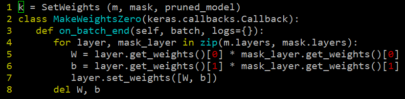

The goal of maintaining this webpage is to collect all "small but important things (resources, understanding, etc.)" at one place.
Sigmoidal networks did not used to get trained without pre-training. But, ReLu and maxout networks generally don't require pre-training unless we have less training data. With less training data, maxout and ReLu will get trained but will not be able to achieve optimal numbers. Pre-training helps there.
The essence of Bayesian statistics is the combination of information from multiple sources. We call this data and prior information, or hierarchical modeling, or dynamic updating, or partial pooling, but in any case it’s all about putting together data to understand a larger structure.
A very concise and quick to understand explanation of TDNNs can be found in page 2, para 2 of Link
A fantastic explanation of the vanishing gradient problem Link
Shifting and scaling is mean and covariance normalization.
This article sheds some light on some popular misquotes.
Again, I discovered many small but important points while reading research papers. I am logging them here so that I don't forget them. They are in the image format with highlighted yellow.
